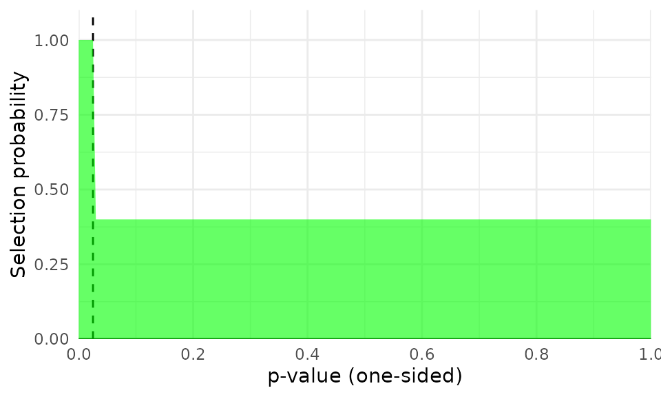
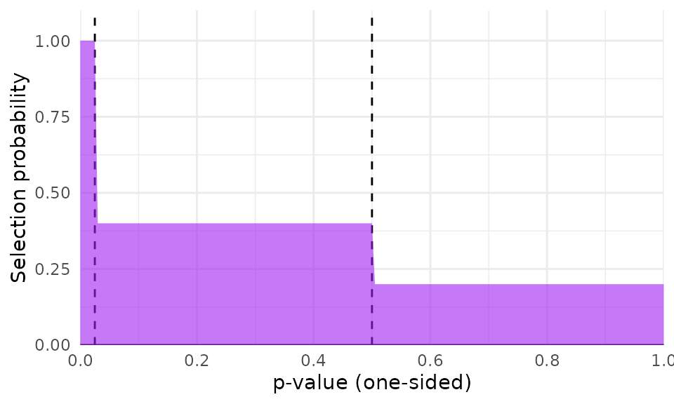
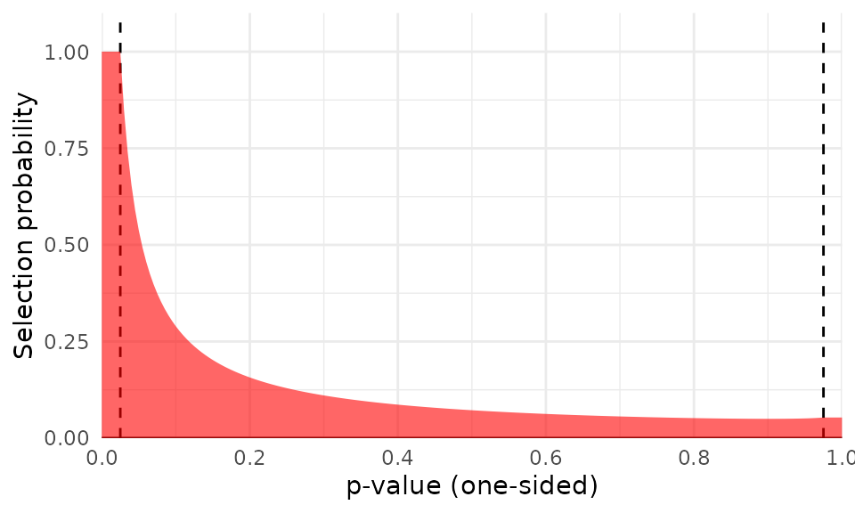
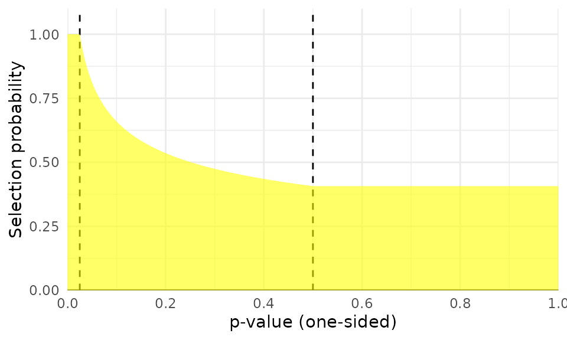
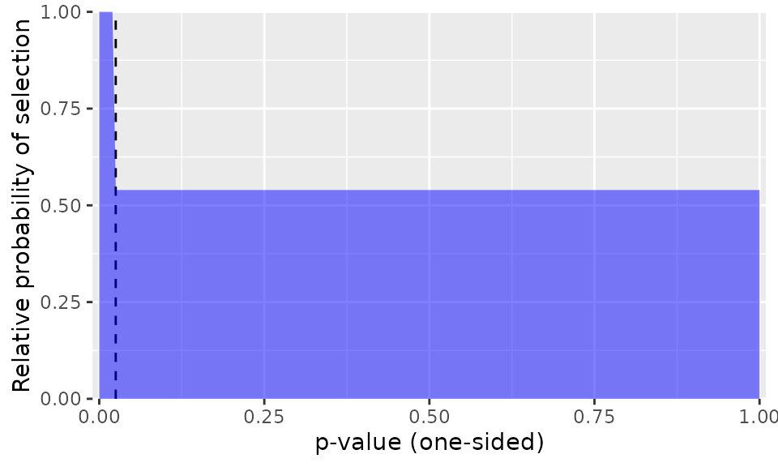
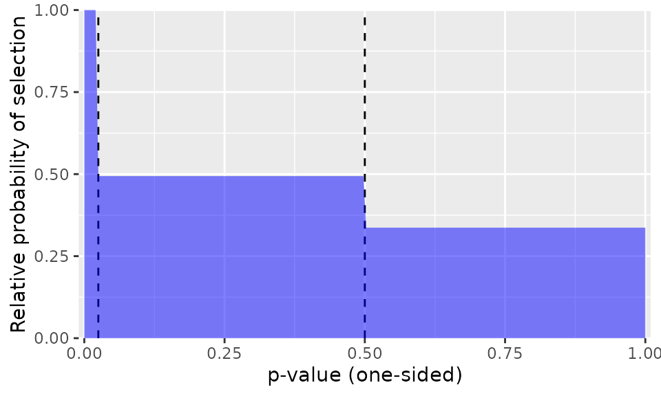
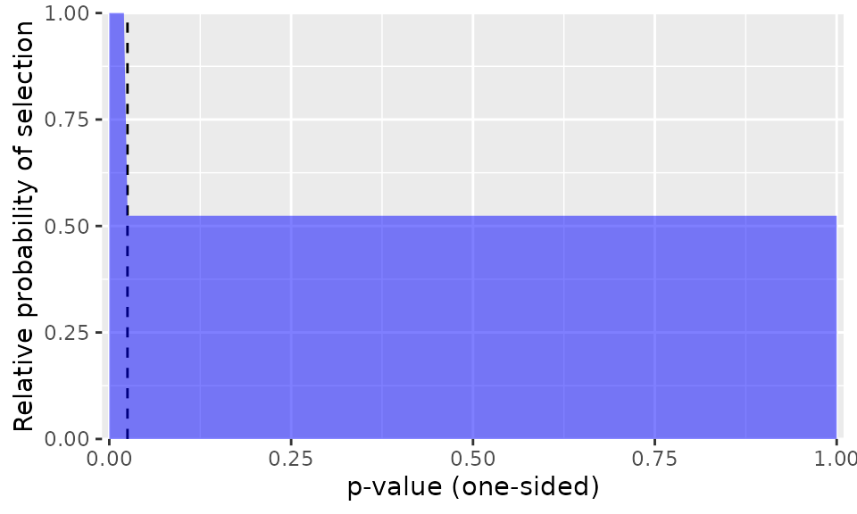
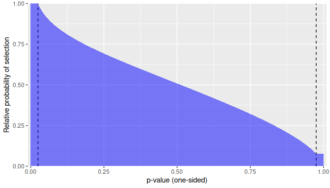

P-Value Selection Models for Meta-Analysis with Dependent Effects
James E. Pustejovsky
Megha Joshi
Martyna Citkowicz
2026-05-08
Source:vignettes/selection-models.Rmd
selection-models.RmdA systematic review and meta-analysis project aims to provide a comprehensive synthesis of available evidence on a topic of interest. One major challenge to this aim is selective reporting of evidence from primary studies. Selective reporting occurs when the direction or statistical significance level of a finding influences whether it is reported and therefore whether the finding is available for inclusion in a systematic review. Selective reporting can arise from biases in the publication process, on the part of journals, editors, and reviewers, as well as through strategic decisions on part of the authors (Rothstein, Sutton, & Borenstein, 2005; Sutton, 2009). If results that are positive and statistically significant are more likely to be reported than results that are null or negative, the evidence base available for meta-analysis will be distorted, leading to inflated effect size estimates from meta-analysis (Carter, Schönbrodt, Gervais, & Hilgard, 2019; McShane, Böckenholt, & Hansen, 2016) and biased estimates of heterogeneity (Augusteijn, van Aert, & van Assen, 2019).
Because selective reporting can make it difficult to draw accurate inferences from a meta-analysis, many tools have been developed that try to detect selective reporting problems and correct for the biases they create in meta-analytic summaries. Widely used methods include graphical diagnostics like funnel plots (Sterne & Egger, 2001; Sterne et al., 2011); tests and adjustments for funnel plot asymmetry such as trim-and-fill (Duval & Tweedie, 2000), Egger’s regression (Egger, Smith, Schneider, & Minder, 1997), and PET/PEESE (Stanley, 2008; Stanley & Doucouliagos, 2014); and -value diagnostics such as p-curve and p-uniform (Aert, Wicherts, & Assen, 2016; Assen, Van Aert, & Wicherts, 2015; Simonsohn, Nelson, & Simmons, 2014). Selection models are another class of methods that both test and correct for selective reporting by directly modeling the section process (Citkowicz & Vevea, 2017; Hedges, 1992; Hedges & Vevea, 1996; Vevea & Hedges, 1995). However, very few methods for investigating selective reporting can accommodate dependent effect sizes. This limitation poses a problem for meta-analyses in education, psychology and other social sciences, where dependent effects are a common feature of meta-analytic data.
Dependent effect sizes occur when primary studies report results for multiple measures of an outcome construct, collect repeated measures of an outcome across multiple time-points, or involve comparisons between multiple intervention conditions. This dependency violates statistical assumptions of independent errors, leading to overly narrow confidence intervals, hypothesis tests with inflated type one error rates, and incorrect inferences. Meta-analysts now have access to an array of methods for summarizing and modeling dependent effect sizes, including multi-level meta-analyses (Konstantopoulos, 2011; Van den Noortgate, López-López, Marín-Martínez, & Sánchez-Meca, 2013, 2015), robust variance estimation (Hedges, Tipton, & Johnson, 2010; Tipton, 2015; Tipton & Pustejovsky, 2015), and combinations thereof (Pustejovsky & Tipton, 2022). These methods can be combined with a few of the available techniques for investigating selective reporting, but this is currently limited to techniques based on regression adjustment (Chen & Pustejovsky, 2024; Fernández-Castilla et al., 2019; Rodgers & Pustejovsky, 2020) or sensitivity analyses based on simple forms of selection models, which provide bounds on average effects given an a priori level of selective reporting (Mathur & VanderWeele, 2020).
The metaselection package aims to expand the range of
techniques available for investigating selective reporting bias while
also accommodating meta-analytic datasets that include dependent effect
sizes. In particular, the package provides methods for investigating and
accounting for selective reporting based on selection models, where
prior developments were limited to data with independent effect sizes.
The available models describe the marginal distribution of
effect size estimates and so do not attempt to directly capture the
dependence structure among effect size estimates. However, the package
implements methods that account for dependent effect sizes after fitting
the model, using either cluster-robust variance estimation (CRVE, i.e.,
sandwich estimation) or clustered bootstrapping techniques. Simulation
results show that applying selection models to dependent effect size
estimates reduces bias in the estimate of the overall effect size (Pustejovsky,
Citkowicz, & Joshi, 2025). Combining the selection models
with cluster-bootstrapping leads to confidence intervals with
close-to-nominal coverage rates (Pustejovsky et al.,
2025).
Several existing packages provide implementations of selection
models, but none can accommodate dependent effect size estimates. For
example, the metafor package (Viechtbauer, 2010)
includes the selmodel() function, which allows users to fit
many different types of selection models. The weightr
package (Coburn &
Vevea, 2019) includes functions to estimate a class of
-value
selection models described in Vevea & Hedges
(1995). However, the
functions available in these packages can only be applied to
meta-analytic data assuming that the effect sizes are independent. In
addition, the PublicationBias package (Braginsky, Mathur,
& VanderWeele, 2023) implements sensitivity analyses for
selective reporting bias that incorporate cluster-robust variance
estimation methods for handling dependent effect sizes. However, the
sensitivity analyses implemented in the package are based on a
pre-specified degree of selective reporting, rather than allowing the
degree of selection to be estimated from the data. The sensitivity
analyses are also based on a specific and simple form of selection model
and do not allow modeling of more complex forms of selection.
Selection Models
Selection models are a tool for investigating selective reporting by
making explicit assumptions about the process by which the effect size
estimates are reported (Rothstein et al., 2005).
Such models have two components: a set of assumptions describing the
evidence-generation process and a set of assumptions describing the
selection process. The metaselection package implements a
flexible class of selection models, in which the evidence-generating
process follows a random effects location-scale meta-regression model
(Viechtbauer & López‐López,
2022) and where the selection process is a function of
one-sided
-values,
either in the form of a step function (Vevea & Hedges, 1995) or a
beta-density function (Citkowicz & Vevea,
2017). The step function model involves specifying
psychologically salient but functionally arbitrary thresholds (or
steps), such as
,
which categorize the
-values
into intervals that have different probabilities of selection (Vevea & Hedges,
1995). The beta-density model uses a different selection
function, based on a beta distribution, to capture distinctive, more
smoothly varying patterns of selection (Citkowicz & Vevea,
2017).
Consider a meta-analytic dataset with a total of samples, where study includes effect size estimates. Let denote an effect size estimate produced by a sample, prior to selective reporting. The effect size estimate has standard error , which is treated as a fixed quantity. Let be a row vector of predictors that encode characteristics of the effect sizes or the samples and may be related to average effect size magnitude. Let be a row vector of predictors that may be related to effect size heterogeneity. Let denote the standard normal cumulative distribution function and the standard normal density. Finally, let be the one-sided -value corresponding to the effect size estimate, which is a function of the effect size estimate and its standard error: .
The evidence-generating process
The model for the evidence-generating process is a random effects location-scale meta-regression model, in which where is a vector of regression coefficients that relate the predictors to average effect size magnitude, is a normally distributed random effect with mean zero and variance , and is a normally distributed sampling error with mean zero and known variance . The variance of the random effects is modeled as where is a vector of coefficients that relate the predictors to the degree of marginal variation in the random effects. If the model does not include predictors of heterogeneity, then and the model reduces to a conventional random effects meta-regression in which .
Note that this random-effects location scale model treats each observed effect size as if it were independent, even though the data may include multiple, statistically dependent effect size estimates generated from the same sample. Thus, it is a model for the marginal distribution of effect size estimates, which does not attempt to capture the dependence structure among effect size estimates drawn from the same sample. As a result, the regression coefficients describe the overall average effects (given the predictors) and variance parameters describe the marginal or total heterogeneity of the effect size distribution, rather than decomposing the heterogeneity into within-sample and between-sample components.
Selective reporting processes
The selective reporting process is defined by a selection function, which specifies the probability that an effect size estimate is reported given its -value. Let be an indicator for whether effect size in study is observed. Then the selection model defines . The package includes two different forms of selection functions: step functions and beta-density functions.
Although it is possible in principle to specify selection functions in terms of -values from two-tailed hypothesis tests, the models implemented in the package are based on selection functions for one-tailed -values. In primary studies, researchers typically report -values from two-tailed hypothesis tests. However, prejudice against non-significant results is generally directional, and two-tailed -values do not consider the sign or valence of the effect. Thus, our formulation and discussion of these functions uses one-tailed -values based on the null hypothesis of versus the alternative .
Step functions
Hedges (1992) and Vevea & Hedges (1995) proposed to model the selective reporting process using a step-function, with thresholds chosen to correspond to “psychologically salient” -values. In the general formulation, suppose that there are steps, , and that The selection parameters control the probabilities of selection given a -value, with parameter defined as the relative probability that an effect size estimate is observed, given that its -value is in the range , compared to the probability that an effect size estimate is observed, given that its -value is in the range . The model is estimated in terms of log-transformed relative probabilities so that the parameter space is unrestricted, with , where , for . With this parameterization, describes a process where effect sizes are reported with uniform probability regardless of their signs or statistical significance levels.
In practice, meta-analysts will often use only a small number of steps in the selection model. One common choice is the three-parameter selection model, which has a single step at (the default in the package), as depicted in the first figure below. With this choice of threshold, positive effects that are statistically significant at the two-sided level of have a different probability of selection than effects that are not statistically significant or not in the anticipated direction.

One-step selection model with
Another possibility is to use two steps at and , which allows for different probabilities of selection for effects that are positive but not statistically significant and effects that are negative (i.e., in the opposite the intended direction). We call the latter model a four-parameter selection model; it is depicted in the figure below.

Two-step selection model with
Beta-density functions
Citkowicz & Vevea (2017) proposed a
selection model based on an alternative form of selection function,
where the probability of reporting follows a beta density. Compared to a
step function, the beta density selection function can capture a very
different set of shapes, with selection probabilities that vary smoothly
over the range of possible one-sided
-values.
The metaselection package implements a modification of the
beta-density function as originally proposed in Citkowicz & Vevea (2017). The modification
involves truncating the selection probabilities at user-specified steps
and
,
so that the selection function is given by
where
.
Using this modification, one might set truncation points at
and
(the default values in the package) so that all statistically
significant positive effect size estimates have the same selection
probability and, likewise, all statistically significant, negative
effect size estimates have the same selection probability, with the
selection probabilities of non-significant effect sizes varying
according to a beta density. The first figure below depicts this
truncated beta density using the default truncation points and with
,
which represents very strong selection. The second figure depicts a
truncated beta density with more moderate values of
and where the second truncation point is set at
,
so that all negative effect size estimates have equal selection
probability.

Beta-density selection model with , using truncation points

Beta-density selection model with , using truncation points
In the package, the beta-density function is parameterized in terms of , where , for . With this parameterization, describes a process where effect sizes are reported with uniform probability regardless of their statistical significance levels.
Estimation
The combination of assumptions about the evidence-generating process and assumptions about the selection process implies a marginal distribution for the observed effect sizes. The evidence-generating process describes the effect size distribution and the selection process specifies . The distribution of observed effect size estimates then corresponds to , which depends on the meta-regression coefficients , the scale regression coefficients , and the selection parameters .
The metaselection package implements two different
estimation strategies: composite marginal likelihood and augmented and
reweighted Gaussian likelihood. In the first, model parameter estimates
are obtained by taking the values that maximize the log-likelihood of
the observations, treating each effect size estimate as if it were
independent. An alternative estimation strategy, augmented and
reweighted Gaussian likelihood, defines the parameter estimator as the
solution to a set of mean-zero estimating equations. The selection
parameters are estimated using their score equations, just as in the
composite marginal likelihood estimator. Unlike the composite marginal
likelihood strategy, the meta-regression coefficients and scale
regression coefficients are estimated using the re-weighted log
likelihood of the Gaussian evidence-generating process, with weights
equal to the inverse probability of selection. This strategy was
initially suggested by Mathur & VanderWeele
(2020), who focused on
using inverse probability of selection weighting for purposes of
sensitivity analysis with selection parameters specified a priori. The
implementation in the metaselection package uses the
strategy to jointly estimate the meta-regression, scale regression, and
selection parameters.
Cluster-robust variance estimation
If each sample included in a meta-analysis provides just a single
effect size estimate (i.e., if
for
),
then standard errors and confidence intervals for the selection model
parameters can be constructed using standard techniques based on the
inverse of the Fisher information under the model. Such an approach is
used in other implementations of selection models, including the
selmodel() function in the metafor package
(Viechtbauer, 2010) and
the weightfunct() function in the weightr
package (Coburn &
Vevea, 2019).1 However, this approach is predicated on the
assumption that the effect size estimates are mutually independent.
Thus, it is inappropriate if the data include samples that provide
multiple, statistically dependent effect size estimates.
For meta-regression models that do not account for selective reporting, Hedges et al. (2010) proposed CRVE methods (also known as sandwich estimators) that accommodate dependent effect sizes, even if the exact dependence structure is not known or is not correctly specified. The form of CRVE originally described in Hedges et al. (2010) is based on large-sample approximations and requires a relatively large number of independent samples (each of which might have multiple effect size estimates) to function well. Subsequent work developed small-sample refinements to CRVE, including adjustments to hypothesis tests and confidence intervals based on CRVE, which are accurately calibrated even for datasets that include a small number of independent clusters (Tipton, 2015; Tipton & Pustejovsky, 2015).
CRVE methods can also be applied to selection models to quantify
uncertainty in parameter estimates obtained by composite maximum
likelihood or augmented and reweighted Gaussian likelihood. The
metaselection package provides standard errors and
confidence intervals based on CRVE methods by default. The
implementation is similar to the original, large-sample CRVE methods
described by Hedges et al. (2010); the subsequently
developed small-sample refinements are not currently available for
selection models. It is important to bear in mind that CRVE methods are
the default only because they are computationally convenient and quicker
to compute compared to bootstrap-based methods—not because they are the
best available method. With CRVE, confidence intervals for model
parameters can be constructed using large-sample normal approximations,
but these intervals require a large number of independent samples to
provide well-calibrated coverage levels.
Bootstrapped confidence intervals
An alternative to CRVE is to use bootstrap re-sampling methods to
quantify uncertainty in parameter estimates. Bootstrapping involves
re-sampling many times from the original data to create an empirical
distribution that can be used as a proxy for the actual sampling
distribution of parameter estimates (Boos, 2003). With dependent
data structures, entire clusters of observations are re-sampled so that
each bootstrapped dataset includes dependent observations, emulating the
structure of the original dataset. In the implementation in the
metaselection package, this approach is called the
multinomial bootstrap. The package also implements two other variations
of bootstrapping. One variation, called the two-stage approach,
re-samples clusters of observations and then re-samples effect size
estimates within each cluster. Another variation, known as the
fractional random weight bootstrap (Xu, Gotwalt, Hong, King, & Meeker,
2020) or Bayesian bootstrap (Newton & Raftery, 1994; Rubin, 1981), involves
assigning a random weight to each cluster of dependent observations,
where the weights are simulated from an exponential distribution with
mean 1.
Several different methods can be used to construct confidence
intervals from a bootstrap distribution (Davison & Hinkley,
1997), which use various approximations and therefore vary in
the accuracy of their coverage levels. The metaselection
package implements five different techniques, following the same methods
and terminology as in the boot package (Canty & Ripley,
2021):
- The percentile confidence interval
(
CI_method = "percentile") is based on quantiles of the bootstrap distribution. - The “basic” confidence interval (
CI_method = "basic") pivots the bootstrap distribution around the point estimate. - The bias-corrected and accelerated confidence interval
(
CI_method = "BCa") adjusts the percentile confidence interval based on the bias of the sampling distribution and an “acceleration” adjustment for the relationship between the parameter and the variance of the estimator’s sampling distribution. - The standard normal confidence interval
(
CI_method = "normal") uses the bootstrap standard error with a standard normal critical value. - The studentized confidence interval
(
CI_method = "student") is based on the bootstrap distribution of the cluster-robust statistic rather than the point estimator of a parameter.
Our simulation results indicate that bootstrap confidence intervals, particularly using two-stage bootstrap resampling with percentile confidence intervals, leads to coverage rates that are close to the nominal level of 0.95 whereas the coverage rates provided by the CRVE method are below nominal. Therefore, we recommend using the two-stage or multinomial bootstrap with the percentile confidence intervals (Pustejovsky et al., 2025).
Bootstrap confidence intervals require re-estimating the selection
model and re-calculating parameter estimates on each re-sampled dataset,
which is a computationally demanding process. Furthermore, obtaining
accurate confidence intervals requires using a relatively large number
of bootstrap replications (Davidson & MacKinnon,
2000); using an insufficient number will produce confidence
intervals that are too narrow and have below-nominal coverage. We
recommend using 1999 replications, and this is the default used in the
selection_model() function when the bootstrap
argument is set to "two-stage", "multinomial",
or "exponential". The computational demands of
bootstrapping can be mitigated by using parallel processing, as we
demonstrate below.
Using the metaselection package
We now demonstrate the key functions from the
metaselection package. As a running example, we use data
from a meta-analysis by Lehmann, Elliot, &
Calin-Jageman (2018), who
examined the effects of exposure to the color red on judgements of
attractiveness. The dataset is available in the metadat
package (White, Noble,
Senior, Hamilton, & Viechtbauer, 2022) as
dat.lehmann2018. It consists of 81 effect sizes from 41
studies. The following code loads the dataset and creates variables that
will be needed for the subsequent analysis.
data("dat.lehmann2018", package = "metadat")
dat.lehmann2018$study <- dat.lehmann2018$Full_Citation
dat.lehmann2018$sei <- sqrt(dat.lehmann2018$vi)
dat.lehmann2018$esid <- 1:nrow(dat.lehmann2018) Preliminary Analysis
As a point of comparison, we first run an analysis that ignores the possibility of selective reporting bias but accounts for the dependence structure of the effect sizes using a correlated-and-hierarchical effects (CHE) working model and CRVE (Pustejovsky & Tipton, 2022). The following code first creates a sampling variance-covariance matrix assuming that effect size estimates from the same study have sampling errors that are correlated at 0.8. It then fits a CHE working model and applies robust variance estimation, clustering by study.
library(metafor)
library(clubSandwich)
# Create sampling variance-covariance matrix
V_mat <- vcalc(
vi = vi,
cluster = study,
obs = esid,
data = dat.lehmann2018,
rho = 0.8,
sparse = TRUE
)
# First CHE working model
CHE_mod <- rma.mv(
yi = yi, V = V_mat,
random = ~ 1 | study / esid,
data = dat.lehmann2018,
sparse = TRUE
) |>
# Apply RVE with small-sample corrections, clustering by study
robust(cluster = study, clubSandwich = TRUE)
CHE_mod##
## Multivariate Meta-Analysis Model (k = 81; method: REML)
##
## Variance Components:
##
## estim sqrt nlvls fixed factor
## sigma^2.1 0.0494 0.2223 41 no study
## sigma^2.2 0.0737 0.2715 81 no study/esid
##
## Test for Heterogeneity:
## Q(df = 80) = 453.5173, p-val < .0001
##
## Number of estimates: 81
## Number of clusters: 41
## Estimates per cluster: 1-6 (mean: 1.98, median: 1)
##
## Model Results:
##
## estimate se¹ tval¹ df¹ pval¹ ci.lb¹ ci.ub¹
## 0.2168 0.0607 3.5695 35.75 0.0010 0.0936 0.3400 **
##
## ---
## Signif. codes: 0 '***' 0.001 '**' 0.01 '*' 0.05 '.' 0.1 ' ' 1
##
## 1) results based on cluster-robust inference (var-cov estimator: CR2,
## approx t-test and confidence interval, df: Satterthwaite approx)The overall estimate of the average effect is 0.217, 95% CI [0.094,
0.34], which is significantly different from zero
(
= 0.001). The estimated total variance (including both between- and
within-study heterogeneity) is 0.123, corresponding to a total standard
deviation of 0.351. Next, we examine how this average effect size
estimate differs from the estimates based on step-function or
beta-function selection models, as fitted using the
metaselection package.
Three-Parameter Step Function with RVE
The primary function for fitting
-value
selection models is selection_model(). In the code below,
we fit a step-function selection model to the
dat.lehmann2018 data using the
selection_model() function. We specify which variable is
the effect size, yi, and which is the standard error for
the effect size, sei. We indicate that we want to estimate
a "step" selection model and specify a single step at 0.025
by setting step = 0.025. By default, the function fits the
model using composite maximum likelihood estimation and calculates
standard errors and confidence intervals using CRVE.2
library(metaselection)
mod_3PSM <- selection_model(
data = dat.lehmann2018,
yi = yi,
sei = sei,
cluster = study,
selection_type = "step",
steps = 0.025
)
mod_3PSM## param Est SE p_value CI_lo CI_hi
## beta 0.1311 0.1347 0.330 -0.1329 0.395
## tau2 0.0794 0.0815 NA 0.0106 0.594
## lambda1 0.5396 0.6005 0.579 0.0609 4.780The estimate of the overall average effect is now 0.131, 95% CI
[-0.133, 0.395], which is 40% smaller than the estimate that does not
account for selection bias (0.217). This estimate is also no longer
statistically distinct from zero
(
= 0.33). Note that although the metaselection package
calculates
-values,
we recommend focusing on the interpretation of the parameter estimates
and confidence intervals of the model results, which convey information
about the magnitude of the parameters rather than only about whether the
parameters differ from a null value.
The estimated total heterogeneity of 0.079 is somewhat smaller than the total heterogeneity estimate from the CHE model, but is also very imprecisely estimated. We omit the -value for because the -value pertains to an arbitrary and uninteresting null hypothesis, namely that (i.e., that ).
The selection parameter is called lambda1. The estimate
of 0.54 indicates that effect size estimates with one-sided
-values
greater than 0.025 are only about half as likely to be reported as
estimates that are positive and statistically significant (i.e.,
estimates with
).
The selection parameter estimate is quite imprecise, with a 95%
confidence interval of 0.061 to 4.78, which includes the value
corresponding to no selective reporting.
The heterogeneity parameter and the selection parameter are actually
estimated on log scales but are exponentiated (along with the confidence
interval end-points) by default in print(). We can obtain
an estimate on the original scale of the log-variance by setting the
argument transf_gamma to FALSE in the
print() method. Similarly, we can transform the selection
parameter estimates to the log-probability scale by setting
transf_zeta = FALSE:
print(mod_3PSM, transf_gamma = FALSE, transf_zeta = FALSE)## param Est SE p_value CI_lo CI_hi
## beta 0.131 0.135 0.330 -0.133 0.395
## gamma -2.533 1.026 NA -4.545 -0.521
## zeta1 -0.617 1.113 0.579 -2.798 1.564For more detailed information about the results, the
metaselection package also provides a
summary() function:
summary(mod_3PSM)## Step Function Model
##
## Call:
## selection_model(data = dat.lehmann2018, yi = yi, sei = sei, cluster = study,
## selection_type = "step", steps = 0.025)
##
## Number of clusters = 41; Number of effects = 81
##
## Steps: 0.025
## Estimator: composite marginal likelihood
## Variance estimator: robust
##
## Log composite likelihood of selection model: -44.46655
## Inverse selection weighted partial log likelihood: 59.53697
##
## Mean effect estimates:
## Large Sample
## Coef. Estimate Std. Error p-value Lower Upper
## beta 0.131 0.135 0.33 -0.133 0.395
##
## Heterogeneity estimates:
## Large Sample
## Coef. Estimate Std. Error p-value Lower Upper
## tau2 0.0794 0.0815 --- 0.0106 0.594
##
## Selection process estimates:
## Step: 0 < p <= 0.025; Studies: 16; Effects: 25
## Large Sample
## Coef. Estimate Std. Error p-value Lower Upper
## lambda0 1 --- --- --- ---
##
## Step: 0.025 < p <= 1; Studies: 29; Effects: 56
## Large Sample
## Coef. Estimate Std. Error p-value Lower Upper
## lambda1 0.54 0.601 0.579 0.0609 4.78The summary() function also includes the
transf_gamma and transf_zeta arguments, set to
TRUE by default.
Furthermore, the metaselection package provides a
function selection_plot() to visualize the estimated
selection weights:
selection_plot(mod_3PSM)
The plot illustrates how the likelihood of selection differs as a function of the one-sided -value of an effect size estimate. In this example, the plot shows that effect sizes with one-sided -values larger than 0.025 are about half as likely to be published than effect sizes with smaller -values.
Four-Parameter Step Model with RVE
Rather than using a single threshold at
,
we could fit a model that also allows the selection probability for
negative effect size estimates to differ from the selection probability
for positive but non-significant estimates. The following code fits such
a model, setting steps = c(0.025, 0.500):
mod_4PSM <- selection_model(
data = dat.lehmann2018,
yi = yi,
sei = sei,
cluster = study,
selection_type = "step",
steps = c(0.025, 0.500)
)
print(mod_4PSM, transf_gamma = TRUE, transf_zeta = TRUE)## param Est SE p_value CI_lo CI_hi
## beta 0.0719 0.1555 0.644 -0.2329 0.377
## tau2 0.0822 0.0869 NA 0.0104 0.652
## lambda1 0.4940 0.5904 0.555 0.0475 5.140
## lambda2 0.3368 0.4956 0.460 0.0188 6.023The estimate of the overall average effect is 0.072, 95% CI [-0.233, 0.377], even smaller than the estimated effect from the three-parameter step model (0.131) and only 33% of the magnitude of the estimate that does not account for selection bias (0.217).
We can visualize the estimated selection function with
selection_plot():
selection_plot(mod_4PSM)
As is apparent from the plot, this estimated model indicates that negatively signed effects (i.e., those with a one-sided -value > 0.50) are even less likely to be observed than effects that are positive but not statistically significant. However, as can be seen from the robust confidence intervals in the model output, the selection parameters are very imprecisely estimated.3
Three-Parameter Step Model with RVE and Moderators
The selection_model() function allows moderators to be
incorporated into model, which enables us to distinguish between
systematic study differences and selective reporting bias. The function
allows for both discrete and continuous moderators. We will use a
discrete moderator in this example, specifically whether the study used
a within-subjects design compared to a between-subjects design. We
specify the moderator by setting mean_mods = ~ Design.
mod_3PSM_mod <- selection_model(
data = dat.lehmann2018,
yi = yi,
sei = sei,
cluster = study,
selection_type = "step",
steps = 0.025,
mean_mods = ~ Design
)
mod_3PSM_mod## param Est SE p_value CI_lo CI_hi
## beta_(Intercept) 0.1117 0.1147 0.330 -0.1130 0.336
## beta_DesignWithin Subjects 0.0830 0.1378 0.547 -0.1870 0.353
## tau2 0.0769 0.0781 NA 0.0105 0.563
## lambda1 0.5241 0.5857 0.563 0.0586 4.684The estimate of the moderator is 0.083, indicating that studies using
within-subjects designs have an average effect that is 0.083 larger than
studies using between-subjects designs. The moderator accounts for very
little of the between-study variability, as shown by the
tau2 estimate, which goes down only slightly from 0.079 to
0.077 when comparing the three-parameter step function model without and
with the moderator. Similarly, the selection parameter
lambda_1 remains virtually unchanged (from 0.54 to 0.524),
which can be seen in the plot below.
selection_plot(mod_3PSM_mod)
The plot shows that effect sizes with one-sided -values larger than 0.025 are about half as likely to be published than effect sizes with smaller -values, after taking into account how effects vary based on study design type.
Beta Function with RVE
The selection_model() function also allows fitting
models based on beta density selection functions by specifying
selection_type = "beta". The default estimator for the beta
function model is composite maximum likelihood; the augmented and
reweighted Gaussian likelihood estimator is not yet available.
mod_beta <- selection_model(
data = dat.lehmann2018,
yi = yi,
sei = sei,
cluster = study,
selection_type = "beta",
steps = c(0.025, 0.975)
)
print(mod_beta)## param Est SE p_value CI_lo CI_hi
## beta -0.104 0.128 0.4135 -0.3548 0.146
## tau2 0.153 0.135 NA 0.0275 0.858
## lambda1 0.892 0.462 0.8255 0.3233 2.461
## lambda2 1.572 0.318 0.0252 1.0577 2.335The estimate of the overall average effect is -0.104, 95% CI [-0.355, 0.146], which is smaller than both the estimate that does not account for selection bias (0.217) and the estimates from the three- and four-parameter step function models. The average effect estimate based on the beta function is not statistically distinct from zero ( = 0.414).
To see how the probability of selection differs across studies with different -values, we can again visualize the selection function:
selection_plot(mod_beta)
The plot shows that effect sizes with smaller -values are more likely to be published than effects with larger -values. For example, an effect size estimate of zero (with a one-sided -value of ) is about half as likely to be published as an effect with a statistically significant, positive effect.
Bootstrap Confidence Intervals
Rather than relying on robust variance estimation to construct
standard errors and confidence intervals for the parameter estimates, it
is advisable to instead use confidence intervals based on clustered
bootstrap re-sampling. The code below re-fits the three-parameter step
function model to obtain cluster-bootstrap confidence intervals. We
specify bootstrap = "two-stage" to run cluster
bootstrapping and we specify that we want "percentile"
bootstrap confidence intervals as the recommended approach. We specify
that number of bootstraps by setting R to 199. We set the
value to 199 here solely to limit the amount of computation. In
practice, we recommend using a much higher number of bootstrap
replications, such as 1999, to obtain confidence intervals with more
accurate coverage rates (Davidson & MacKinnon,
2000). We highly recommend running the selection models with
cluster bootstrapping, particularly the two-stage bootstrap with
percentile confidence intervals, as this has been shown to improve
confidence interval coverage rates relative to using other forms of
bootstrap confidence intervals (Pustejovsky et al.,
2025).
set.seed(20240916)
system.time(
mod_3PSM_boot <- selection_model(
data = dat.lehmann2018,
yi = yi,
sei = sei,
cluster = study,
selection_type = "step",
steps = 0.025,
bootstrap = "two-stage",
CI_type = "percentile",
R = 199
)
)## user system elapsed
## 56.520 0.025 56.551
print(mod_3PSM_boot, transf_gamma = TRUE, transf_zeta = TRUE)## param Est SE percentile_lower percentile_upper
## beta 0.1311 0.1347 -0.027326 0.426
## tau2 0.0794 0.0815 0.000673 0.218
## lambda1 0.5396 0.6005 0.059430 3.246The overall estimate of the average effect does not change when bootstrapping is applied (0.131). However, the confidence internal is narrower, [-0.027, 0.426] (due partially to the use of a smaller-than-desirable number of bootstrap replications).
Parallel processing
The bootstrapping routine is implemented to work with the
future package for parallel processing. For example, the
following code specifies a multisession future processing
plan with 4 worker nodes, then fits the same model as above:
library(future)
plan(multisession, workers = 4L)
system.time(
selection_model(
data = dat.lehmann2018,
yi = yi,
sei = sei,
cluster = study,
selection_type = "step",
steps = 0.025,
bootstrap = "two-stage",
CI_type = "percentile",
R = 199
)
)## user system elapsed
## 1.457 0.028 9.176Parallel processing substantially reduces the overall computing time. If available, using a larger number of workers would further reduce computing time.
Setting a sequential plan will discontinue use of
parallel processing:
plan(sequential)Progress bars
The package is also designed to work with the progressr
package, which provides customizable progress bars for long-running
calculations. To use a progress bar for only one instance of
bootstrapping, wrap the selection_model() call in
progressr::with_progress():
library(progressr)
with_progress(
sel_fit <- selection_model(
data = dat.lehmann2018,
yi = yi,
sei = sei,
cluster = study,
selection_type = "step",
steps = 0.025,
bootstrap = "two-stage",
CI_type = "percentile",
R = 199
)
)To turn on progress bars for all bootstrap calculations, use
progressr::handlers(global = TRUE)See vignette("progressr-intro") for further details.